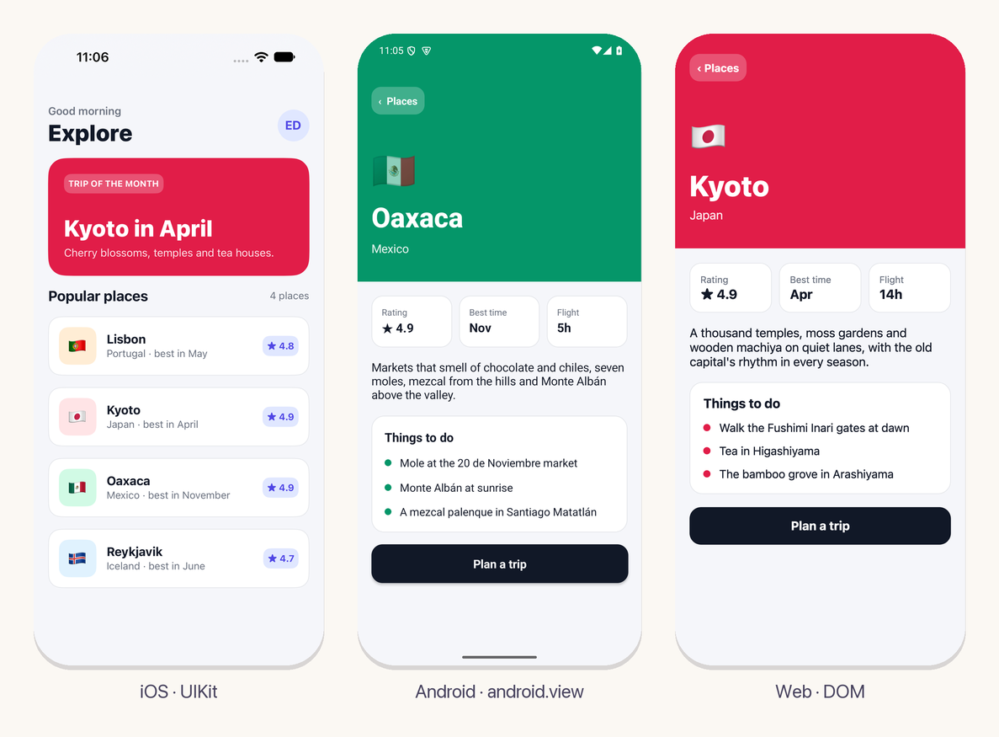
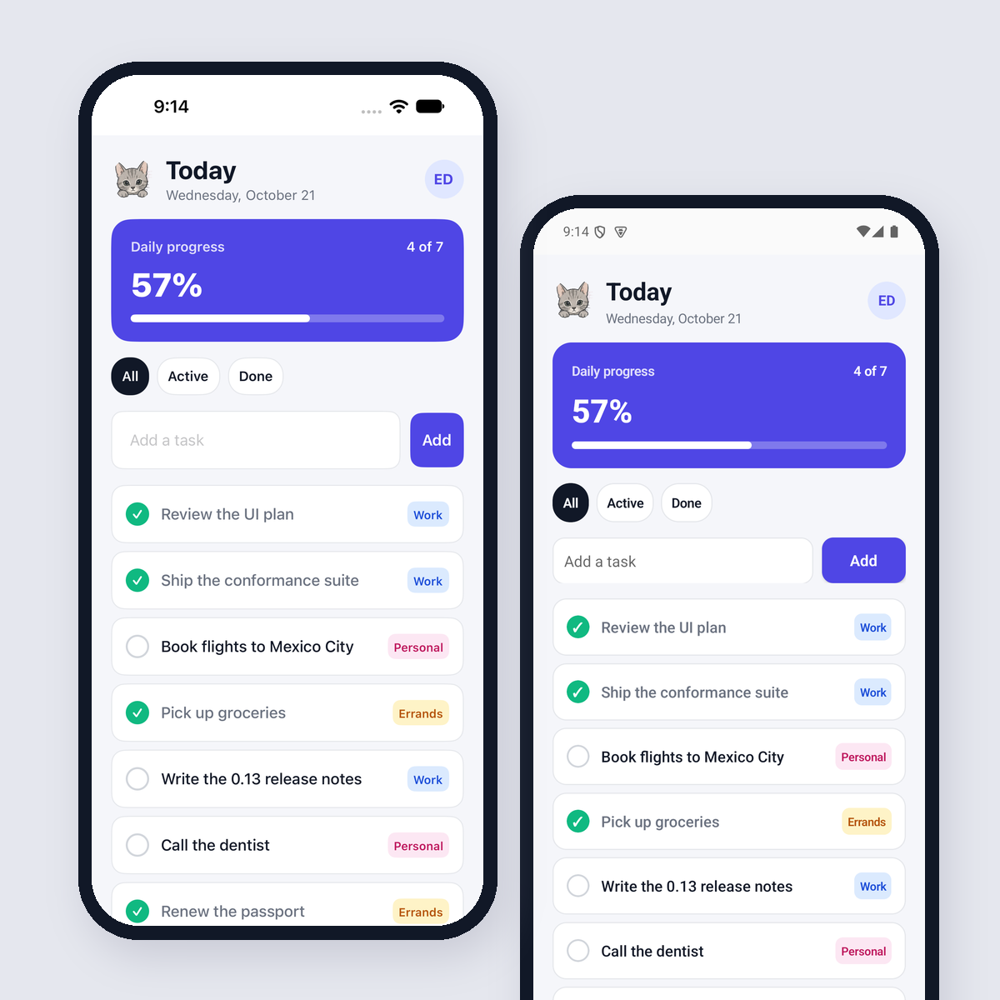
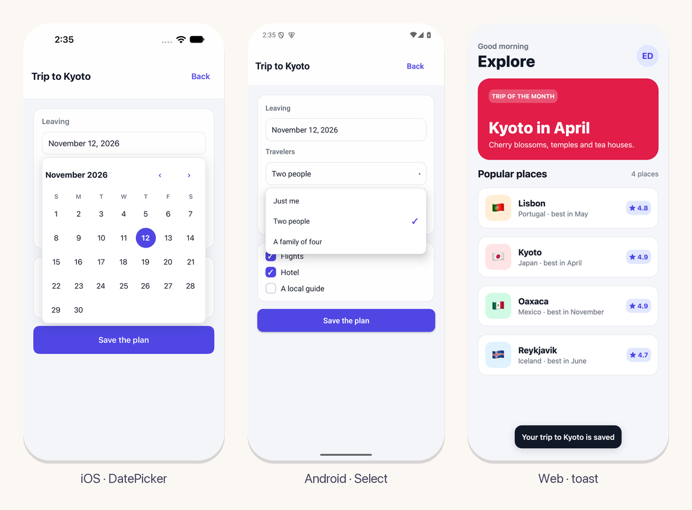

Apps nativas, escritas en Eskiu
Escribe la interfaz una vez, como funciones de Eskiu. El mismo código dibuja vistas de
UIKit en iOS, de android.view en Android y el DOM en la web.

Crea apps nativas para Android, iOS y la web
Un componente es una función normal de Eskiu. Llama a Column,
Text y Button para armar la vista y guarda su estado en
signals. La app se compila a código máquina en iOS y Android, y a WebAssembly en la
web.
Los textos, botones, campos, switches, listas, modales y alertas son los controles de cada plataforma, con su accesibilidad.
import <string>;
import <ui>;
void Counter() {
Column(Style{padding: 24, gap: 12}) {
*Signal<int> count = use_signal<int>(0);
String label;
defer String_free(&label);
String_format(&label, "Pressed %d times", count.get());
TextWith(Style{font_size: 28, font_weight: 700}, label.data);
Button("Press me") {
count.set(count.get() + 1);
}
}
}Escrito en Eskiu, dibujado por la plataforma
Los componentes, el estado y las reglas de layout son el mismo código de Eskiu en todas partes. En cada frame, el núcleo le manda a la plataforma un buffer con los cambios, y un host delgado los aplica a vistas reales acomodadas por Yoga, el motor que usa React Native.

Actualizaciones que tocan solo lo que cambió
Cada bloque registra los signals que lee. Cuando uno cambia, solo ese bloque se vuelve a ejecutar y sus hijos se emparejan por llave, así una lista conserva el estado de cada fila cuando se reordena. Las listas virtuales montan solo las filas cerca de la pantalla, así que un millón de filas cuesta lo mismo que una pantalla llena.
Los hooks, las llaves y los memos se revisan mientras la app corre, y un error se
detiene diciendo dónde ocurrió: in Column[0] > TodoRow[key 3].
Cada cambio en pantalla en un tercio de segundo
ui serve vigila la app y los paquetes de los que depende, y vuelve a
compilar cuando cambia un archivo. En la web la página se recarga y conserva su URL y
sus datos guardados. En el simulador y en Android la app que ya está abierta arranca
otra vez con el código nuevo en el mismo proceso, sin instalarla ni lanzarla de nuevo.
Si un build falla, los errores del compilador se ven encima de la app hasta que el siguiente compila.
$ ui serve ios
ui: built in 2.4 s
Watching for changes
ui: changed, building
Restarted the app on the new build
ui: built in 0.3 s
# medido con la galería del kit en una Mac con Apple siliconOverlays, selectores y avisos
<ui/kit> es un conjunto de componentes con tema hechos con los mismos
elementos: tarjetas, botones, campos, checkboxes, pestañas y barras, y lo que se abre
encima del contenido. Un Popover se coloca junto a lo que lo abrió, arriba o
abajo, dentro de la ventana. DatePicker, Select,
DropdownMenu, ColorPicker y Tooltip están hechos
sobre él, y kit_toast muestra un mensaje por unos segundos.
El tema sigue la apariencia clara u oscura del sistema, o la que tú elijas.

Movimiento y gestos
Un estilo puede mover, escalar, girar y desvanecer un elemento, y
transition_ms anima cada cambio en la plataforma: animaciones de UIKit,
el animador de vistas de Android y transiciones de CSS. Una de las curvas es un
resorte.
ui_on_pan reporta un arrastre con su distancia y su velocidad, y se lo
quita a un botón de adentro en cuanto el dedo se mueve. use_animated
lleva un número a su nuevo valor, para lo que la plataforma no puede animar.
SwipeToDelete del kit está hecho con los dos.
*Signal<int> dx = use_signal<int>(0);
*Signal<bool> held = use_signal<bool>(false);
ui_on_pan(void(Pan p) {
held.set(p.phase == PanBegan || p.phase == PanMoved);
dx.set(held.get() ? p.dx : 0);
});
Row(Style{translate_x: dx.get(),
transition_ms: held.get() ? 0 : 250,
easing: EaseSpring}) {
Text("Arrástrame");
}Los servicios del teléfono, con una sola API
Lo que una app le pide al sistema tiene un solo nombre en todas las plataformas, y cada host responde con el servicio propio de la plataforma.
ui_color_scheme() y los temas del kit siguen al sistema cuando cambia.ui_fetch con NSURLSession, HttpURLConnection y el fetch del navegador.use_interval y use_timeout, con el reloj de la plataforma.Pantallas en el teléfono, páginas en la web
Un router guarda una pila de rutas y un navigator la dibuja. En iOS y Android cada ruta es una pantalla que entra deslizándose, con el botón de atrás y el gesto desde el borde. En la web cada ruta es una URL, y los botones de atrás y adelante del navegador mueven la app. Los deep links abren su pantalla en las tres plataformas.
Las pantallas de abajo siguen montadas, así que al regresar están como las dejaste.
En una ventana amplia, una tablet o un navegador en una computadora, el texto y los controles del kit se vuelven más compactos y el starter pasa sus pestañas a una barra lateral, así que la versión web se siente como una app web y el teléfono conserva su propio diseño.
Navigator(router, void(string route) {
string id = route_param("/places/:id", route, 0);
if (id != null) { PlacePage(router, atoi(id)); }
else { PlaceList(router); }
});
// en otra parte
router.push("/places/2");
router.back();Código nativo cuando lo necesites
Una app o un paquete trae código por plataforma en native/: Objective-C o
Swift en iOS, Java, Kotlin o C en Android, JavaScript en la web. Eskiu lo llama con
funciones extern, el código nativo responde con eventos y puede registrar
sus propias vistas para NativeView.
Las bibliotecas de terceros se declaran en ui.toml: las dependencias de
Maven se compilan con Gradle y los paquetes de Swift con Xcode, y un paquete lleva las
suyas a cada app que lo usa.
# ui.toml
[app]
name = "Explore"
scheme = "places"
[ios.spm]
Collections = { url = "https://github.com/apple/swift-collections", from = "1.1.0" }
[android]
dependencies = ["com.google.android.material:material:1.12.0"]
permissions = ["android.permission.CAMERA"]Del editor a las tiendas
ui open ios y ui open android generan los proyectos de Xcode
y de Android Studio de la app y los abren ahí. Cada Run compila primero el código
Eskiu, así que un cambio en un archivo .esk está en el siguiente Run, con
el depurador nativo, los profilers y tu propio teléfono.
ui release compila para el App Store y Google Play: un IPA firmado para tu
equipo y un App Bundle firmado con una llave de subida que crea y guarda por ti. Revisa
el ícono y el id de la app antes de compilar, toma el número de build del reloj y con
--upload manda el build de iOS a TestFlight.
# ui.toml
[app]
name = "Explore"
id = "com.tuempresa.explore"
icon = "icon.png"
version = "1.0.0"
# Xcode, y cada Run compila el código Eskiu
$ ui open ios
# el App Store y Google Play
$ ui release
ios: build/ui/ios/release/Explore.ipa
android: build/ui/android/release/Explore.aabDe cero a una app corriendo
La herramienta ui crea un proyecto y lo compila o lo corre en cada
plataforma. Necesita emscripten para la web, Xcode para iOS y el SDK de Android para
Android.
Cada elemento, hook y servicio está en Componentes y APIs.
Para empezar con una app completa, ui-starter trae pestañas, pantallas con links, una lista desde la red y un tema guardado. Para un paquete con código nativo, empieza con ui-package-template.
git clone https://github.com/eskiu-lang/ui
eskiuc ui/tools/ui/main.esk -o ~/.eskiu/bin/ui
ui new myapp && cd myapp
ui serve # o ui serve ios, android, macos
ui está en preview. Las vistas se escriben con trailing blocks: Column(Style{padding: 16}) { ... }
pasa el bloque como último argumento de la llamada. Los hosts de Windows y Linux llegan después.